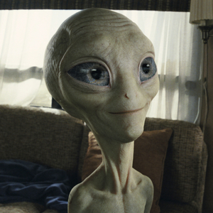
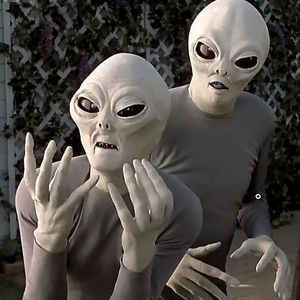
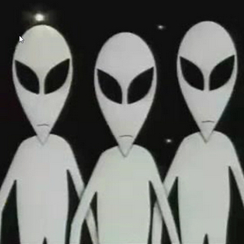

Los Grises
Los Grises, son la forma más frecuentemente referida en los casos de abducción extraterrestre y en la cultura popular. Esta tipología describe a alienígenas humanoides de aproximadamente 90 a 150 cm de altura; piel de color gris —de ahí la denominación hecha por los ufólogos—, con cabezas grandes, brazos y piernas delgados, ojos negros grandes y ovalados, y de los que se presume que son altamente inteligentes e incluso que poseen poderes psíquicos.
Algunos científicos creen que sería perfectamente posible que existan personas con estas características físicas: la piel gris y los oscuros y enormes ojos negros indicarían que el planeta natal de estos hipotéticos seres sería irradiado por una radiación solar muy débil (a falta de luz, los ojos deben agrandarse, y la pigmentación de la piel se habría atrofiado). Por otro lado, el cuerpo pequeño y la enorme cabeza indicarían la evolución intelectual de estos seres (al incrementarse la capacidad de discernimiento y la habilidad tecnológica, el cerebro se habría agrandado, y al no depender de la fuerza bruta para sobrevivir, los músculos y toda la contextura física se habría encogido).
Esta raza es la que más ha sido referenciada en la cultura pop, haciendo apariciones en la literatura, el cine y la televisión, como podemos ver a continuación..
-
Paul (2011)
La historia sigue la aventura de dos frikis ingleses que viajan hasta la Convención Internacional de Cómics de San Diego, y que después deciden hacer un viaje por el Área 51. En su camino se encuentran con un pequeño alienígena Gris llamado Paul, quien busca ayuda para escapar del Gobierno que quiere acabar con él y, también, para encontrar el camino de regreso a su hogar.
-
Scary Movie 3 (2003)
La tercera entrega de la saga de parodias de películas de Terror más conocidas del cine, también incluyó referencias a películas sobre abducciones alienígenas. Con unas máscaras de látex de muy bajo presupuesto, se pueden ver los Grises de la película Alien Abduction: Incident in Lake County.
-
South Park (1997)
Desde que South Park comenzó, Matt Stone y Trey Parker han introducido una gran cantidad de gags recurrentes en la serie. Uno de es la presencia de un extraterrestre escondido en cada uno de los capítulos. Los Grises aparecen una y otra vez a lo largo de todas las temporadas de South Park, a veces son de tamaño de un hombre, otras veces son pequeños, a veces pasan desapercibidos camuflados al fondo o se les distingue entre una multitud.
Según las descripciones de quienes dicen haber estado en contacto con ellos, estos individuos no expresarían ningún tipo de emoción o sentimiento, lo cual es una característica que suele atribuirse al estereotipo de que, a causa de sus grandes cerebros superdesarrollados, su intelecto sería su más latente rasgo psicológico dominante y eso habría eliminado cualquier rastro de instinto o emoción humana.